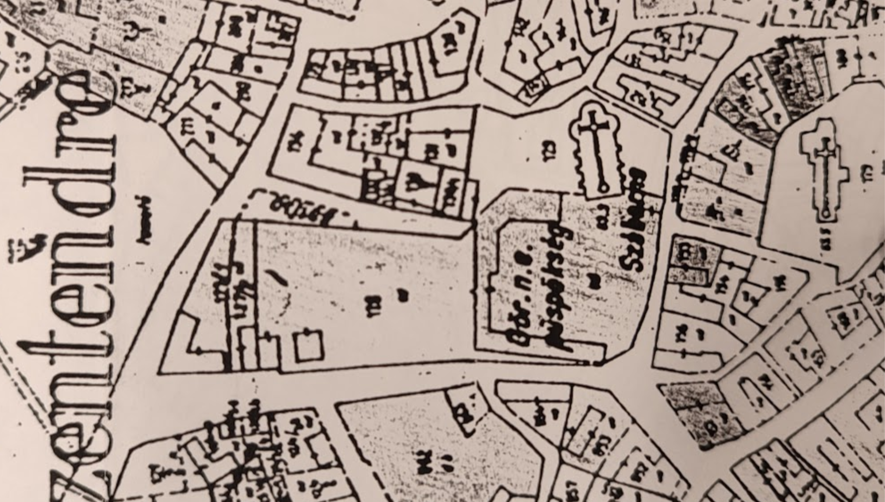

Helyszín és Történeti Fejlődés
Válasszon a 4 korszak térképe közül! Kattintson a térképen lévő pontokra a részletek megtekintéséhez.

Régen és Most
Válasszon egy épületrészt a listából! A csúszka jobbra-balra húzásával összemérhető a múlt és a jelen állapota.
A Színházterem és Előadóterem
Az épületben elhelyezett nagy színpad és előadóterem a szokásos könyvtári funkciók mellett komplex kulturális központtá emelte az intézményt. Az előadóban a legnagyobb változás az átadás 50. évfordulójára kicserélt székek a nézőtéren, de a gyönyörű faburkolatok azóta is megmaradtak.
Fenntarthatóság Pillérei
Kattintson az egyes elemekre a részletes leírás kinyitásához!
Környezeti pillér
Madárbarát munkahely, méhecske hotel, esővízgyűjtés és tanösvény...
Társadalmi pillér
Közösségi funkciók, gyermekkönyvtár, nyitott terek és bevonás...
Gazdasági pillér
Meglévő épület jelenlegi kihasználtsága a városközpontban...
Kulturális pillér
Barcsay Jenő monumentális műalkotásának és az építészeti örökségnek az őrzése...